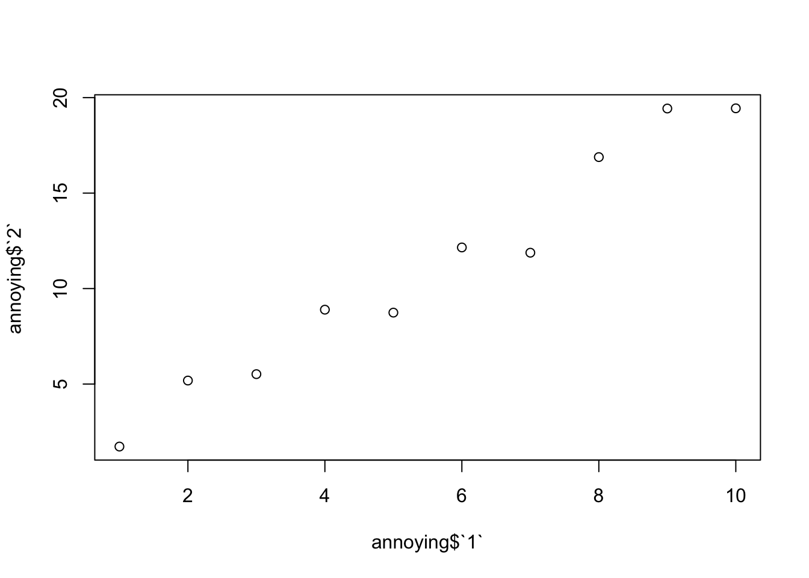

Chapter 3 Week Two Meeting
For this week, everyone should have completed the reading listed in Section 2.5. And everyone should have at least been trying to set up an RStudio Project with their own data in it, and given a whack at reading their data into a variable.
3.1 Workflow and Project Recap
3.1.1 Workflow: basics
3.1.1.1 Style
I just want to reiterate a few things that might seem minor, but are stylistically important in the long run.
- Don’t use
=for assignment. Use<-. On a Mac use Option-“-” to get that more quickly.Hey! Note that you do use
=(and only=) for passing values to function arguments.# do this: my_variable <- 10 # don't do this (it works but is not good style) my_variable = 10 # do this result <- my_function(arg1 = 10, arg2 = "foo") # don't do this (it might return a results, but will likely be incorrect) result <- my_function(arg1 <- 10, arg2 <- "foo") # for example, figure out how this fails: matrix(data <- 1:10, nrow <- 5, byrow <- TRUE)
- Put spaces around both sides of
=, and<-, and other mathematical operators like+,-,*, etc. - Put spaces after commas.
- Use R-Studio’s magical
Cmd-ikeyboard shortcut to automatically indent highlighted code. - If you want to really geek out, Hadley shares his style tips more completely in his Advanced R Programming book.
- In fact, he now has updated those edicts for the tidyverse here.
This might seem pedantic, but adhering to these conventions makes it much easier for people to read your code.
3.1.1.2 TAB-completion
This is HUGE!! Start developing a twitchy left pinky now!
TAB early; TAB often!
Note that that completions of R code in the console or in the source window are context dependent:
- variables in global environment
- Functions
- Quoted strings complete to filenames in directories
- Installed packages in
library() - Help topics after
? - Function arguments within a function’s parentheses. This is absolutely huge. If you can’t remember all the different arguments a function takes, type the function and hit TAB within the parentheses. Try typing
read.table()and his TAB while the cursor is inside the parentheses. Use the up and down arrows to scroll through the options, hit TAB again to insert one. Note that after you have used an argument it no longer appears in the list of options.
3.1.1.3 Ctrl + Shift + 1/2/3/4 to turn one of the panes to full-screen
Thanks to Diana for writing about practing that in her homework. Awesome feature that I’ve not used previously!
3.1.2 Workflow: projects
3.1.2.1 Disable saving of workspace for sure!
Let’s all walk through this.
3.1.2.2 Another worthwhile preference for small-screens (like laptops)
Make sure that the RMarkdown preference is set to open in: Window. See Figure 3.1.Figure 3.1: To read RMarkdown output in a separate page (highly recommended for laptops) choose “RMarkdown” on the left and choose “Window” from the dropdown menu, and click OK.
3.1.2.3 Opening RStudio Projects from the OS (by clicking in the Finder)
- You can open an RStudio project by double clicking the RStudio Project icon from, for example, a Mac Finder window. It lives in a directory of the same name (but it has a
.Rprojexension.) - Or if you are a command line type, use, for example
open my_project.Rprojfrom the Terminal. - You can open as many RStudio projects as you like at a time.
- Each RStudio project launches its own, completely separate R session!
- Interestingly, if you click on the
.Rprojfile of a project that is open, RStudio will open another instance of that project. So, don’t click on the.Rprojfile for a project that is already open!- (In other applications on the Mac that will typically just take you to the currently open docuemnt, but not so with RStudio.)
- Use cmd-TAB to switch between open RStudio projects.
3.1.2.4 Opening RStudio Projects from RStudio
- When you open existing projects using the “File->Open Project…” menu option or with the “File -> Recent Projects” menu option and you currently have RStudio open “in another project,”" then the new project that you are opening jumps in “on top of” the previous one. It looks like your previous project has vanished into the ether. The OS thinks there is only one RStudio open, an it has the most recently opened project in it. WHERE’S MY OTHER ONE?!
- You can get back to it by clicking the project dropdown in the upper right of the project.
- However, if you switch between projects this way it restarts R each time you switch back to your project so it takes a lot of time and it is super-annoying.
- If you are working concurrently in multiple projects, I recommend opening them from the Finder (or Terminal) and switching between them using Cmd-TAB.
3.1.2.5 What is the .Rproj file, really
It is just a text file that stores some information and any project-specific preferences if there are any. Here is what rep-res-eeb-2017.Rproj looks like if you open it with a text editor:
Version: 1.0
RestoreWorkspace: Default
SaveWorkspace: Default
AlwaysSaveHistory: Default
EnableCodeIndexing: Yes
UseSpacesForTab: Yes
NumSpacesForTab: 2
Encoding: UTF-8
RnwWeave: knitr
LaTeX: pdfLaTeX
AutoAppendNewline: Yes
StripTrailingWhitespace: Yes
BuildType: Website3.1.2.6 R in an RStudio project launches in the project directory
- This makes reproducibility much easier. You can find and load files using relative paths.
- Everything you might be accessing from R (data, scripts, etc.) or outputting from R will be easy to get to if they are “in the project”
- When we say that a file is “in the project” we mean that it is stored on disk somewhere within the project directory.
- The project directory (sometimes called the root of the project directory) is just the directory that contains the
.Rprojfile. - Expert user tip:
rprojroot::find_rstudio_root_file()(part of therprojrootpackage) let’s you find the root of an RStudio project directory. This can be helpful sometimes….
3.1.3 Workflow: scripts
- Script editor window vs console window
- Keyboard shortcuts for evaluating codes in your scripts:
- Cmd-Return (sends current line to console and advances cursor to next line)
- Highlight with Cmd-Return (send highlighted code to console)
- For this, Shift-up-arrow and Shift-down-arrow are good for highlighting.
- As is Shift-Command-right-arrow or Shift-command-left-arrow.
3.2 Let’s talk about the pipe %>%
For anyone who had ever worked comfortably in Unix for a long time, and was used to chaining the output of one utility in as the input for another utility using the pipe: |, R’s syntax for composition of functions was always super cumbersome and required all sorts of nasty, nested parentheses.
Consider this simple set of operations: imagine we want to
- simulate 1000 gamma random variables, \(G\), with parameters \(\alpha=5\) and \(\beta = 1\),
- for each \(G\) simulate a Poisson random variable with mean (
lambda) \(G\). - take the
sqrtof each such variable - compute the variance of the result
This can all be done in one line, but is ugly!
# set random seed for reproducibility
set.seed(5)
var(sqrt(rpois(n = 1000, lambda = rgamma(n = 1000, shape = 5, scale = 1))))## [1] 0.5828768It doesn’t matter how stylishly you include spaces in your code, this is just Fugly!
You can write it on multiple lines, but it is friggin’ ghastly! Maybe worse than before.
set.seed(5)
var(
sqrt(
rpois(n = 1000, lambda = rgamma(
n = 1000, shape = 5, scale = 1
)
)
)
)## [1] 0.5828768The problem is that the order in which the operations are done does not match the way things are written: the first thing to get done is the call to rgamma, which is nested deeply within the parentheses.
Enter the R “pipe” symbol. It is not as convenient to type as |, but you can make it quickly with the keyboard shortcut cmd-shift-M: %>%. This was introduced in the magrittr package, and the tidyverse imports the %>% symbol from magrittr.
Behold!
library(tidyverse)
set.seed(5)
rgamma(n = 1000, shape = 5, scale = 1) %>%
rpois(n = 1000, lambda = .) %>% # pass G is as the lambda parameter using the dot: .
sqrt() %>% # no dot here, so the previous result is just the first argument to sqrt
var() # same here## [1] 0.5828768That is a hell of a lot easier to read! It gives me goose bumps it is so elegant.
The %>% symbol says, “take the result that occurred before the %>% and pass it in as the . in whatever follows the %>%.” Furthermore, if there is no . in the expression after the %>%, simply pass the result that occurred before the %>% in as the first argument in the function call that comes after the %>%.
This type of “chaining” of operations is particularly powerful when operating on tibbles using dplyr
3.3 Tibbles and “rectangular” data
- gonna talk a little about data types too.
- Chinook CWT data example.
- Get comfy with the
View()function!
3.3.1 Tibble excercises
I’m gonna just blast through these here in case people are curious. These are answers I would use.
Use
class()class(mtcars)## [1] "data.frame"class(tibble::as_tibble(mtcars))## [1] "tbl_df" "tbl" "data.frame"Hey! does everyone see the
tibble::as_tibble()there? The::is the “namespace addresser”. It lets you run a function from a library without loading the library. If you already have donelibrary(tidyverse)you would have loaded thetibblelibrary and could just writeas_tibble(mtcars)but I wanted to be explicit about where theas_tibble()function comes from. (As an aside, it turns out that this is how you would write it if you were writing code for a package.)Let’s do it first as a
data.frame:library(tidyverse) df <- data.frame(abc = 1, xyz = "a") df$x## [1] a ## Levels: adf[, "xyz"]## [1] a ## Levels: adf[, c("abc", "xyz")]## abc xyz ## 1 1 aAnd then we can do it again as a
tibbledf <- tibble(abc = 1, xyz = "a") %>% as_tibble() df$x## Warning: Unknown column 'x'## NULLdf$xyz## [1] "a"df[, "xyz"]## # A tibble: 1 × 1 ## xyz ## <chr> ## 1 adf[, c("abc", "xyz")]## # A tibble: 1 × 2 ## abc xyz ## <dbl> <chr> ## 1 1 aAha! Things to notice are:
data.frame()coerces to factors.- tibble doesn’t do partial name matching
$x\(\neq\)$xyz - Square bracket extraction of a single column of a tibble retains its tibbleness. Not so with
data.frame. Withdata.frameit gets turned into a vector. $extraction withtibblereturns a vector.
Let’s make
mtcarsatibblemtcars_t <- as_tibble(mtcars) var <- "mpg" # this will get the "mpg" column out but retain it as a tibble mtcars_t[, var]## # A tibble: 32 × 1 ## mpg ## <dbl> ## 1 21.0 ## 2 21.0 ## 3 22.8 ## 4 21.4 ## 5 18.7 ## 6 18.1 ## 7 14.3 ## 8 24.4 ## 9 22.8 ## 10 19.2 ## # ... with 22 more rows# and this will just grab the column as a vector mtcars_t[[var]]## [1] 21.0 21.0 22.8 21.4 18.7 18.1 14.3 24.4 22.8 19.2 17.8 16.4 17.3 15.2 ## [15] 10.4 10.4 14.7 32.4 30.4 33.9 21.5 15.5 15.2 13.3 19.2 27.3 26.0 30.4 ## [29] 15.8 19.7 15.0 21.4Remember that non-syntactic names (those that do not start with a letter or underscore and which include characters other than
-and “_" and “.”) must be enclosed in backticks. Let’s get our data:annoying <- tibble( `1` = 1:10, `2` = `1` * 2 + rnorm(length(`1`)) )OK, now let’s do the questions:
Use dollar sign with backticks:
annoying$`1`## [1] 1 2 3 4 5 6 7 8 9 10Use dollar sign with backticks
plot(annoying$`1`, annoying$`2`)Use
mutate(we haven’t talked about this yet) with backticksannoying %>% mutate(`3` = `2` / `1`)## # A tibble: 10 × 3 ## `1` `2` `3` ## <int> <dbl> <dbl> ## 1 1 1.725450 1.725450 ## 2 2 5.182598 2.591299 ## 3 3 5.517888 1.839296 ## 4 4 8.894382 2.223596 ## 5 5 8.740021 1.748004 ## 6 6 12.153600 2.025600 ## 7 7 11.878134 1.696876 ## 8 8 16.885478 2.110685 ## 9 9 19.429848 2.158872 ## 10 10 19.439987 1.943999Use
rename(we haven’t talked about this yet) with backticksannoying %>% mutate(`3` = `2` / `1`) %>% rename(one = `1`, two = `2`, three = `3`)## # A tibble: 10 × 3 ## one two three ## <int> <dbl> <dbl> ## 1 1 1.725450 1.725450 ## 2 2 5.182598 2.591299 ## 3 3 5.517888 1.839296 ## 4 4 8.894382 2.223596 ## 5 5 8.740021 1.748004 ## 6 6 12.153600 2.025600 ## 7 7 11.878134 1.696876 ## 8 8 16.885478 2.110685 ## 9 9 19.429848 2.158872 ## 10 10 19.439987 1.943999
Look it up with
?enframe. It turns out thatenframe()is super useful.
Often you will have a vector of values with names associated with it. For example:v <- c(1, 3, 4, 10) names(v) <- c("a", "b", "b", "c") v## a b b c ## 1 3 4 10If you want to deal with this type of vector in the tidyverse, you can enframe it into a tibble:
enframe(v)## # A tibble: 4 × 2 ## name value ## <chr> <dbl> ## 1 a 1 ## 2 b 3 ## 3 b 4 ## 4 c 10By default it makes columns of “name” and “value”. That is awesome!
Do
package?tibbleand read through it to find that the answer we want istibble.max_extra_cols.
3.4 Data import
- Why use
readrinstead of the base-R reading functions? Plenty of reasons. - Explicit column specifications if you want to do that.
3.4.1 RStudio’s GUI importer
- This is a great way to start importing CSV files.
- Don’t do it every time! use the code that it creates to make reading your data in reproducible.